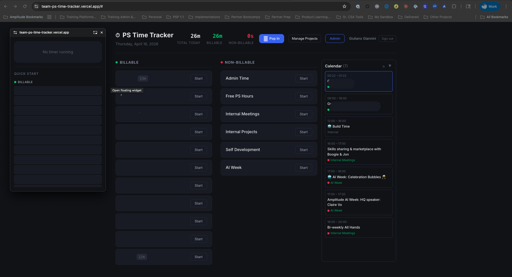
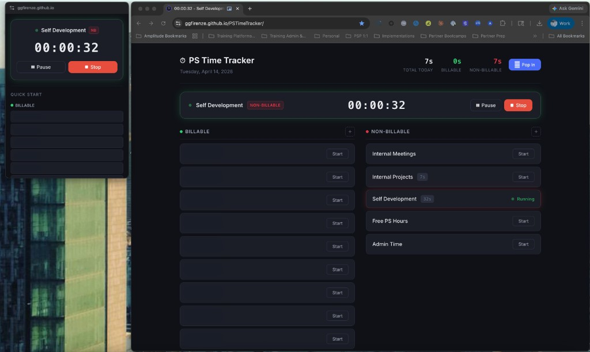
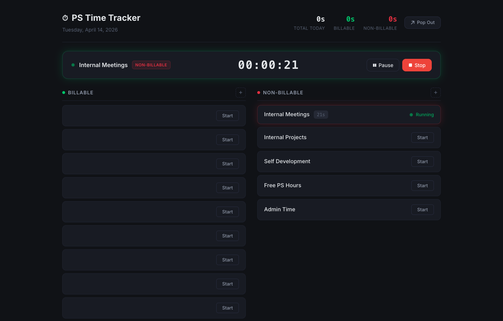
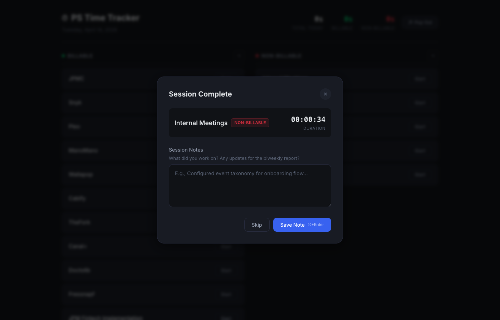
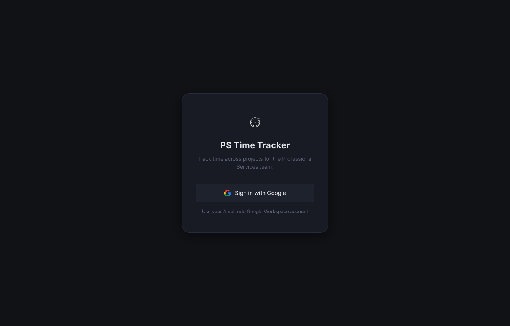
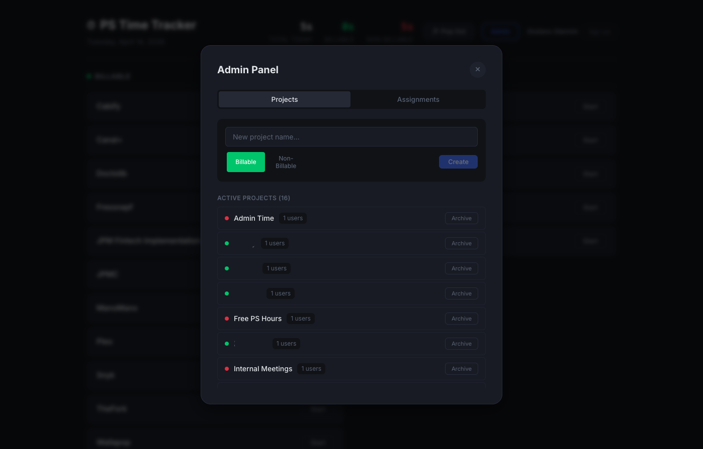

How a weekend side-project evolved into a full-stack time tracking solution for Amplitude's 63-person Professional Services team.






Start, pause, resume, and stop timers per project. Elapsed time updates every second. Pause tracking preserves accuracy.
Pop out a compact always-on-top timer using the Document PiP API. Track time without leaving your current workflow.
Capture what you worked on when stopping a timer. Notes feed directly into automated biweekly reports.
Sign in with your @amplitude.com Google account. No extra passwords. Internal-only access enforced at the OAuth level.
Admins create projects, manage categories, and assign them to team members. Users see only their relevant projects.
Every timer action is instrumented. Charts, funnels, and automated reports deliver insights without manual effort.
Google Calendar integration auto-starts and stops timers based on your meetings. Smart matching learns which events map to which projects.
Detects 30 minutes of inactivity, warns for 5 minutes, then auto-stops and rewinds to the nearest half-hour. No more runaway timers.
| Event | Properties | Trigger |
|---|---|---|
Sign In Completed | — | User completes Google SSO login |
Timer Started | project_name, is_billable, source | User or calendar sync starts a timer |
Timer Paused | project_name, is_billable, duration_seconds, source | User pauses a timer |
Timer Stopped | project_name, is_billable, duration_seconds, source | User, calendar, or idle timeout stops a timer |
Note Submitted | project_name, is_billable, note_length | User saves a session note |
Note Skipped | project_name, is_billable | User skips the note |
Widget Popped Out | — | User opens the floating widget |
Widget Popped In | — | User closes the widget back into the main app |
Calendar Event Linked | event_title, project_name, keyword | User maps a calendar event to a project |
Idle Timeout | project_name, rewinded_seconds | Timer auto-stopped after 30 min inactivity |
Project Removed | project_name, is_billable | User removes a project from their list |
Daily active users tracking time. Measures adoption across the team.
The team's overall billable utilization rate as a single number.
From opening the floating widget to actually using it for timers.
How consistently people capture session notes vs. skipping them.
Individual breakdown for biweekly reports and manager reviews.
Delivered via Amplitude Automated Reports — a scheduled dashboard snapshot sent to Slack.
Delivered via Amplitude AI Agent — reads all session notes from the past two weeks, groups by project, and generates a leadership-ready summary.